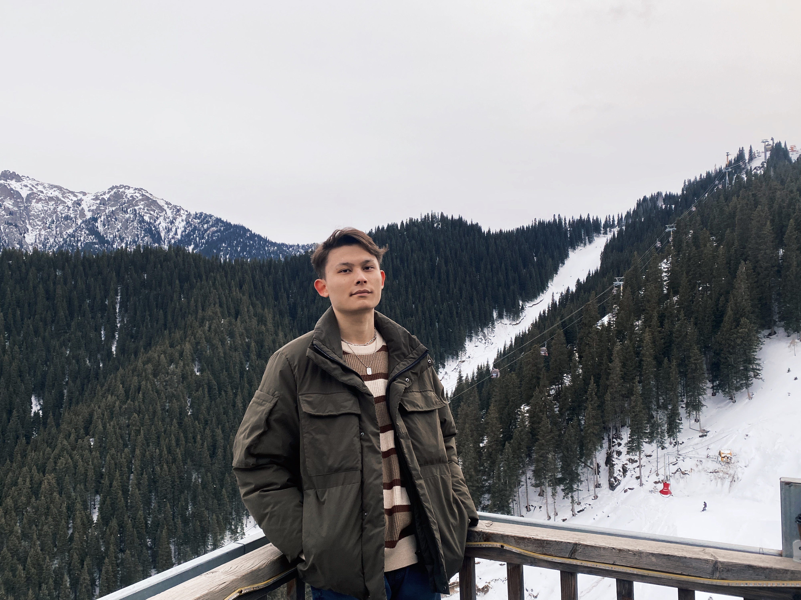

About Me
Where I am from, what I study, and what I do outside of class.
I have been in the United States for two years. I came here because the U.S. has one of the best education systems in the world, which provides great opportunities to earn a higher degree. I chose Computer Science because I have loved computers since I was young. When I was a child, I had a dream of creating a game with my own name and making it truly successful. I want to develop a popular game that people all over the world can enjoy. In my free time, I enjoy playing soccer. I love running on the field, laughing with my teammates, and making new friends through the games I play. My favorite soccer team is Manchester United, and I have been a fan of them for a long time. I also like playing the guitar. I have been learning it by myself for five years. I am not very professional yet, but at least I can play some songs — even though I cannot sing very well! It is funny because I enjoy playing music, but I have a terrible singing voice. Looking toward the future, my current goal is to become a Web Developer. If I have the opportunity, I would like to continue improving myself and eventually become a Software Developer or Game Developer to achieve my dream. You can learn more about my education on my Education page.
